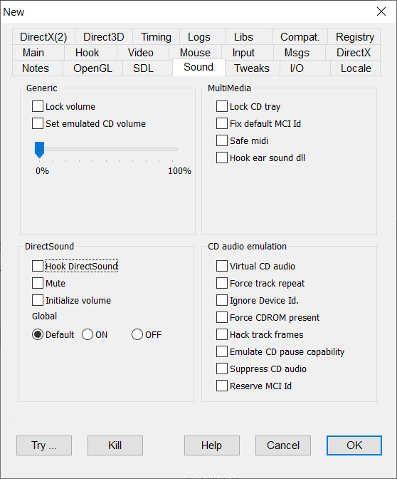

|
Lock Volume |
LOCKVOLUME |
Prevents volume changes requested by the application. This holds for DirectSound SFX effects and, since v2.04.59, also for multimedia audio track volume changes requested through libmm library. |
|
Set emulated CD volume |
|
When enabled allows the adjustment of the emulated CD music volume using the slider. This is useful for games that have broken in game volume controls that do not allow a proper music vs. sound effect balance. |
|
Hook DirectSound |
HOOKDIRECTSOUND |
Hooks DirectSound to avoid hardware exclusive access, allowing debugging, tracing, and future expansions. |
|
Mute |
SOUNDMUTE |
Option against buffers starting automatically without Play method - fixes mute option with "Digging Jim". |
|
Initialize volume |
DSINITVOLUME |
Initializes the sound volume for the application's mixer channel. Fixes old games starting with zero volume as in "O.D.T. Escape ... or Die Trying" movies. The volume is initialized to the value defined with the emulated CD volume slider. |
Global focus
|
Default: |
no intervention |
|
ON |
Forces sound buffers with GLOBALFOCUS capability to allow sound play also when focus is lost. |
|
OFF |
Forces sound buffers without GLOBALFOCUS capability to stop sound play when focus is lost. |
|
Lock CD tray |
LOCKCDTRAY |
Attempt to bypass all operations that may open / clode the physical CD tray. |
|
Fix default MCI Id |
FIXDEFAULTMCIID |
When opening or querying a MCI midi or wave device you can use the default Id. -1.On Win95/98/ME this field was a 16 bit WORD value equal to 0xFFFF, but since WinXP it became a 32 bit DWORD value equal to 0xFFFFFFFF so that the legacy 0xFFFF was no longer valid. The flag converts the legacy (WORD)-1 value to a valid (DWORD)-1 value. |
|
SafeMidi |
SAFEMIDIOUT |
Some programs try do make fading midi sounds by quickly changing the midi sound volume programmatically. This operation, perhaps depending on the midi sound drivers, can be harmful and lead to the program crash. This flag disables some potentially harmful midi operations like the volume change and the sequence reset as a reasonable compromise between sound quality and robustness. |
|
Hook ear sound dll |
HOOKEARSOUND |
For diagnostic purposes only, it hooks aer sound dlls to enable operation tracing. |
|
Virtual CD audio |
VIRTUALCDAUDIO |
Flag for CD audio emulation. First make sure you have a folder named "Music" in your game folder with the music in .ogg format starting from track02.ogg. For a detailed tutorial, see Tutorials > Virtual CD Audio. Since v2.04.98 the Virtual CD was modified accepting more audio file formats and introducing a playlist caching to speed up operations. New supported formats are .flac (lossyless compressed audio), ,mp3 (lossy compressed audio) and .wav (uncompressed audio), though not all formats may react in the same way to all mci commands. The playlist caching creates in the Music folder a file named tracklen.nfo that holds all relevant information to quickly access the tracks. Beware: whenever the content of the Music folder changes (whether to add / remove a track, change its format or duration) this file should be manually deleted in order to tell the emulator to build an up-to-date new version. The Music folder can host also a special file mcihack.txt that allows the definition of special behaviors of the mci calls accessing the virtual CD. See the section below |
|
Force track repeat |
FORCETRACKREPEAT |
For use when we want a repeated track that is not in the original behaviour. |
|
Ignore Device Id. |
IGNOREMCIDEVID |
The audio cd player emulation needs to know whether a given id belongs to video devices (e.g. when playing a movie) or an audio device (the cd rom reader to play a soundtrack). To avoid ambiguity, the fake audio devices are opened returning a fake device id 0xBEEF that will never overlap a valid real device id. But in some cases the device is opened before the hook take place, so the audio device could get a real device id (like 0, 1 or such) unless you set strong hook modes (inject suspended process or debug mode). But if such an ambiguity does not exist, the IGNOREMCIDEVID flag tells the audio emulator to handle any device id, no matter if it is real or a fake 0xBEEF. This allows to make audio emulation working also with default hooking and in case the device is opened before the hook. |
|
Force CDROM present |
CDROMPRESENT |
pretend there is a CDROM disk ready to be played in each queried device. |
|
Hack track frames |
HACKMCIFRAMES |
Some games (so far, "Absolute Terror", full CD release) could use a fake CD track frame counter as a copy protection mechanism. The flag causes the CD emulation to return an hacked frame counter value fer each track as stored in the mcihack.txt file located i the Music folder. |
|
Emulate CD pause capability |
CDPAUSECAPABILITY |
According to MSDN documentation, a CD drive may or may not have the capability to pause the music play. Depending on that, when a "pause" command is sent, the returned drive status could be either "pause" or "stop". Since the majority of drives doesn't have this capability, it is possible that a program may simply expect the "stop" answer. This is what happens with "Speedboat Attack" that, after a pause command sent entering the ESC key during a boat race, it resumes the music play only if the status is equal to "stop" and not "paused". For these reasons the flag is defaulted to off. |
|
Suppress CD audio |
SUPPRESSCDAUDIO |
Experimental flag, pretends that the system has no CD audio device also if that device is present. In order to have effect, the flag must be set together with VIRTUALCDAUDIO. |
|
Reserve MCI id |
RESERVEMCIDEVICE |
This flag is a little tricky. DxWnd CD audio emulation assigns a fake MCI device id to the audio session, taking care that the id is not used by other devices. But since the audio CD device is not really opened, there is the possibility that the same id could be assigned to another MCI session, for instance to a midi mapper device. This could cause confusion when the program tries to address a specific device with a non-unique id, and is a problem when the program tries to close all opened devices. It should be remarked that a failure to orderly close all MCI devices may saturate the system capacity to open new devices until the next system reboot. The flag cancels this risk by opening a real MCI device when opening the fake CD session, so that the id would be reserved and not overlapped by following operations. In order to do that with minimal impact with the program, DxWnd opens an audio device for a wav file, namely the dxwnd.wav file that now (since v2.05.51 on) must be located in the DxWnd folder. It should be noted that the wav file will be used only to open a MCI device, but it will never be played. |
the file mcihack.txt allows the definition of special behaviors of the mci calls accessing the virtual CD.
It is a standard Windows .ini file composed by different sections: [info] identity=value : defines the CD identity (ref. mciSendString("info cdaudio identity")) product=value : defines the CD product code (ref. mciSendString("info cdaudio upc")) [frames] tracknn=value : forces the track length of tracknn when requested in frames [msec] tracknn=value : forces the track length of tracknn when requested in milliseconds [tmsf] tracknn=value : forces the track length of tracknn when requested in tmsf format